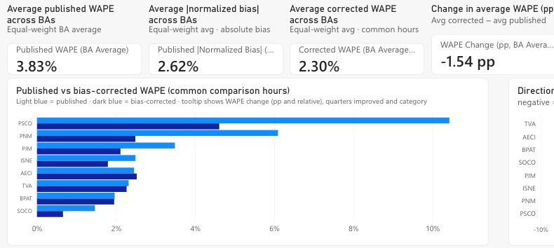

Demand Forecast Performance & Operational Exceptions
Three years of published forecasts for eight balancing authorities, evaluated rather than replaced: each is compared with a seasonal-naive benchmark and with a bias correction built only from prior days.
Error was not equally correctable. Of the six authorities in the headline comparison, the three with stable bias improved in all 12 quarters after correction; the other three were already close to unbiased or gained too little to justify it. The results are reported in a two-page Power BI report reconciled to the Python pipeline.

